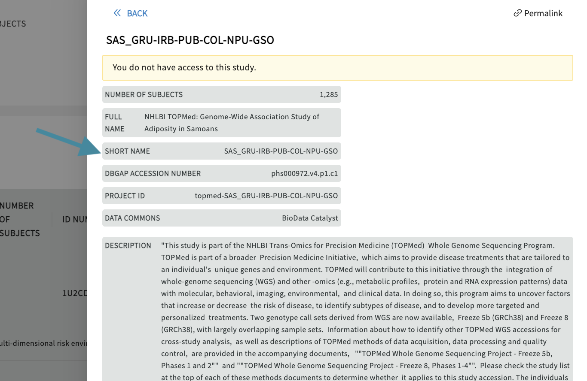

Accessing and Exploring Metadata from the Gen3 Data Portal¶
The data in a Gen3 data commons can be browsed and downloaded using several different methods. The following general documentation will cover some standard methods of data access in a Gen3 data commons. Ultimately, however, the methods of data access offered in a Gen3 data commons is determined by agreements made between the data commons’ sponsors and data contributors.
Various levels of data access can be configured in a Gen3 data commons using the Gen3 Framework Services. If open access data is hosted, a data commons can be configured to allow anonymous access to data, which means users can explore data without logging in. This is the case for the Gen3 Data Hub.
In cases where data is controlled access, typically external users will receive instructions on how to access data and may be required to sign a DUA (Data Use Agreement) legal document.
The following sections provide details on how to explore and access data from within the data commons website and from the command-line by sending requests to the Gen3 open APIs.
Access Data from the Data Portal¶
The Gen3 software stack offers a data portal service that creates a website with graphical tools for performing the basic functionality of a data commons, like browsing data in projects, building patient cohorts across projects, downloading metadata or data files for cohorts, and building database queries.
Profile Page¶
On the profile page users will find information regarding their access to projects, access to Gen3-specific tools (e.g. access to the Workspace), and the function to create API keys for credential downloads. API keys are necessary for the download of files using the Gen3 Client.
Users can view their study access and API keys can be viewed/created/downloaded on the Profile Page.
Exploration Page¶
The primary tool for exploring data within a Gen3 data commons is the Exploration Page, which offers faceted search of data across projects, for example, Gen3 Data Hub Exploration Page. This page can be accessed from the /explorer endpoint or the top navigation bar, by clicking on the “Exploration” icon.
The exploration page has one or several tabs at the top, which each represent a flattened ElasticSearch document of structured metadata records across all the projects in the data commons, which is displayed as a table towards the bottom center of the page. For example, there may be a “Subjects” tab for building patient cohorts, which displays a table of all the records and associated metadata in the subject node, like medical history and demographics. Most commons also have one or more “File” tabs for filtering all the files in a data commons based on things like the file format, data type, or other linked contextual variables, like linked patient demographics or medical history.
Each of these main tabs will have filters on the left-hand side, which can be used to filter the data displayed in the table. There may be an optional button on each tab to download the flattened metadata table as a JSON file. This button should download the table in its filtered state. To remove a filter, click “clear” on individual facets, and you can remove all filters by reloading the page.
Note: The main tabs in the Exploration Page, the available filters, and the properties listed in the data table are entirely customizable and will be different for various Gen3 data commons.
If the table is a list of files, there should be a button for downloading a JSON file that serves as a manifest to use with the gen3-client for downloading multiple files. Otherwise, to download single a file listed in the table, simply click on the GUID (globally unique identifier, or object_id), which should open a page with a download button.

Note: Some data commons have security measures in place that limit what environments users can access data files. For example, users may be required to download and analyze data files in a protected environment, such as a virtual machines (VM) in a virtual private cloud (VPC) or in the built-in Gen3 Workspace, which is accessed by clicking on “Workspace” in the top navigation bar of the data commons website. For more information on the Workspace, see the documentation on how to access and use the Gen3 Workspace.
Export to external analysis workspaces¶
The explorer page can also be configured to allow export of a PFB (Portable Format for Biomedical data) file to external systems such as Terra or Seven Bridges. A PFB file contains structured clinical data, the data dictionary, and pointers to associated files.
Query Page¶
The structured data in a Gen3 data commons can be queried by using the graphQL query language within the GraphiQL interface for building queries, which can be accessed by clicking the “Query” button in the top navigation bar or by navigating to the /query endpoint, for example, the Gen3 Data Hub Query Page.
The button on the Query page to switch between the “Graph Model” or “Flat Model”, will direct the queries to different databases, namely Postgres and ElasticSearch, respectively. Pressing the “Docs” button will reveal documentation of the data commons graphQL schema, which will list the queryable nodes and properties.
For example, typing the name of a node, “sample”, into the “Search Schema” search-box in the Graph Model, and clicking the “root.sample” option will display all the properties that can be queried for that node.
The following example query returns the subject and submitter ids in the subject node in the data commons:
{
subject {
subject_id
submitter_id
}
}
More detailed information on how to query specific data can be found here.
Data Dictionary Viewer¶
-
The Data Dictionary Viewer is designed to make it easier to understand the data model, the field types associated with each node, and the potential values associated with each field. It displays available fields in a node and the dependencies a given node has to the existence of a prior node. This is an invaluable tool for both the submission of data and later analysis of the entire commons.
-
The Data Dictionary Viewer allows toggling views and browsing the nodes as a graph and as tables.
-
Gen3 members can use it through the ‘Dictionary’ icon in the Gen3 Data Hub.
NOTE: For these user guides, https://gen3.datacommons.io is an example URL and can be replaced with the URL of other data commons powered by Gen3.
Viewing Data Dictionary as a Graph¶
- View the Data Dictionary as a graph to see each node, its properties, and its relationships.
- Relationships between nodes are represented by arrows from one node to another.
Viewing Data Dictionary as Tables¶
- View the Data Dictionary as a table to see the name and a brief description of each node, organized by node category.
- Click on the name of a node to display more information about its properties.
- Click on a button in the Download Template column to a download a template for uploading a file of that particular node type. The file can be downloaded as a JSON or TSV file.
Toggling Between Different Views¶
- Click on “Graph View” or “Table View” in the top left of the Dictionary Viewer to switch between these two views.
Viewing Properties of a Single Node¶
- The Properties View of a node lists each property, the property’s type, whether or not the property is required, and a brief description of the property.

Opening Properties View¶
- Click on a node to see its parent nodes and information about its properties.
Search for Node, Property, or Description¶
- Enter a search a term in the search box.
- Search terms can be node names, node descriptions, property names, and property descriptions.
- While typing, a list of suggestions appears below the search bar. Click on a suggestion to search for it.
- A search will display all nodes that contain the search term in either its name or description, or its properties’ names or descriptions.
- A history of your searches appears below the search bar. Click on an item here to display the results again.
Discovery Page¶
The Gen3 Discovery Page allows the visualization of metadata from within the metadata service (MDS). This typically includes public metadata about projects to make it discoverable. The Discovery Page can also be used to store publication information, DOI metadata, or FHIR metadata. It can be used by both data commons and meshes, although it can play a more central role in a data mesh. Users should be able to search based on free text or filter based on tags.
The Discovery Page provides users a venue to search and find studies and datasets displayed on the Biomedical Research Hub. Users can browse through the publicly accessible study-level metadata without requiring authorization.
Use text-based search, faceted search, and tags to rapidly and efficiently find relevant studies, discover new datasets across multiple resources, and easily export selected data files to the analysis workspace. Browse through datasets and study-level metadata and find studies using tags, advanced search, or the free text search field.
Search Features¶
On the Discovery page, several features help you navigate and refine your search.
- Total number of studies: shows the number of studies the BRH is currently displaying.
- Total number of subjects: shows the number of subjects the BRH is currently displaying.
- Free Text Search: Use keywords or tags in the free-text-based search bar to find studies. The free-text search bar can be used to search for study name, ID number, Data Commons, or any keyword that is mentioned in the metadata of the study.
- Data Resources/Data Commons Tags: view these by selecting "Study Characteristics". Click on a tag to filter by a Data Resource/Data Commons. Selecting multiple tags works in an "OR" logic (e.g., "find AnVIL OR BioData Catalyst studies").
- Export Options: Login first to leverage the export options. Select one or multiple studies and download a file manifest or export the data files to a secure cloud environment "Workspace" to start your custom data analysis in Python or R.
- Data Availability: Filter on available, pending, and not-yet-available datasets.
- Studies: This table feature presents all current studies on BRH. Click on any study to show useful information about the study (metadata).
Find available Study-level Metadata¶
Clicking on any study will display the available study-level and dataset metadata.

Find accessible Datasets¶
Users can select and filter studies from multiple resources and conduct analyses on the selected datasets in a workspace. Users can search but not interact with data they do not have access to. By selecting the data access button in the top right corner of the study page user access can be displayed. The Discovery Page will automatically update the list of studies that are accessible.
Access Data using the API¶
All the functionality of the data commons data portal is available by sending requests to the open APIs of the data commons. Detailed API specifications of the Gen3 services can be browsed in the API documentation.